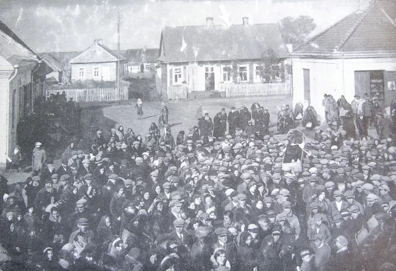
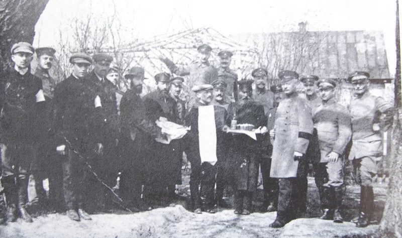
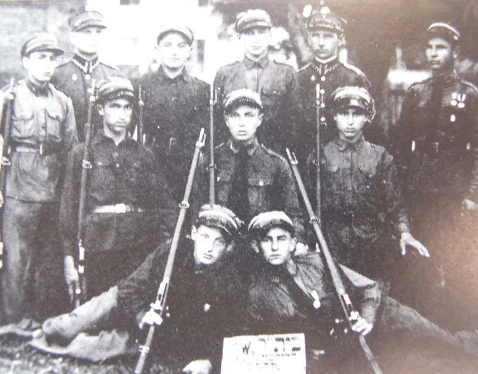

Дрогичин во время Великой Отечественной войны
Самыми тяжелыми и трагическими для жителей района стали годы войны. Только за один день в августе 1941 года каратели уничтожили в деревне Хомск около 2-х тысяч мирных жителей.

Василий Корж — личность для белорусской партизанщины значимая, если не сказать культовая. Именно отряд под его предводительством встретился с немцами 28 июня 1941 года у деревни Галево возле Пинска. Именно этот бой считается началом партизанского движения на территории СССР во время Второй мировой войны. Всего же на Дрогичинщине в годы оккупации действовало более 20 партизанских отрядов.

15 ноября 1942 года немцы провели массовый расстрел еврейского населения в Антополе. И таких жестоких примеров, к сожалению, очень много. В обстановке ненависти к кровавому оккупационному режиму росло стремление людей к борьбе с ним. С Дрогичинской землей связаны имена партизан-героев Алексея Черткова, Евгения Макаревича, Дмитрия Карповича Удовикова.В феврале 1944 года Красная Армия подошла к южным границам тогдашних Пинской и Брестской областей. Немецкое командование решило нанести удар по белорусскому выступу с юга. С этой целью началось выдавливание партизан, которые находились южнее Днепровско-Бугского канала. Бои партизан с немецкими и венгерскими частями продолжались с 21 февраля по конец марта и вошли в историю как «40-дневная оборона Днепровско-Бугского канала». Особая значимость уделяется семье Литвинчук, один из представителей которой Василий Литвинчук написал хроникально-документальную книгу о борьбе с оккупантами «Там, за Днепро-Бугом», в которой рассказал о становлении партизанского движения на юге Беларуси.

Выстояв в кровопролитной и жестокой войне, унесшей тысячи жизней, оставившей покалеченные судьбы людей, пепел сожженных деревень, Дрогичинская земля возродилась для новой жизни.